Yapay zekâ ile üretilmiş ilk konseptlerdir; hiçbiri uygulamaya eklenmedi. Beğendiklerini/beğenmediklerini söyle, yeniden üretelim. Adalar yalnızca uygulamada olacak; kitapta ada dili yok.
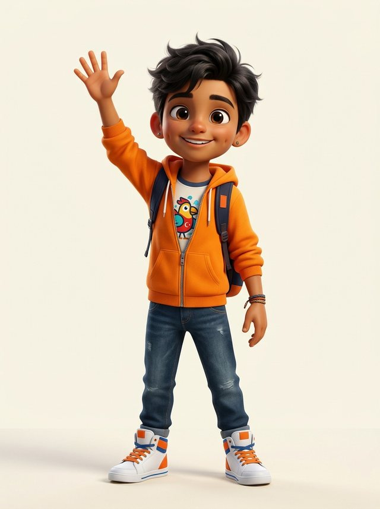
Erkek A
Turuncu kapüşonlu, el sallıyor, sırt çantalı.
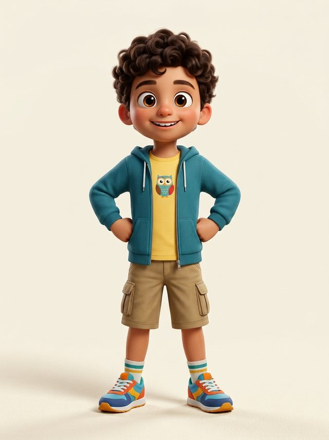
Erkek B
Kıvırcık saçlı, petrol yeşili ceket, ellerini beline koymuş.
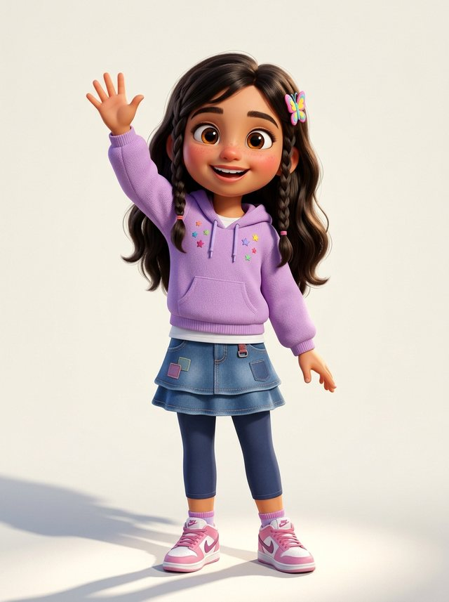
Kız A
Uzun dalgalı saç, iki yan örgü, kelebek toka, lila kapüşonlu.
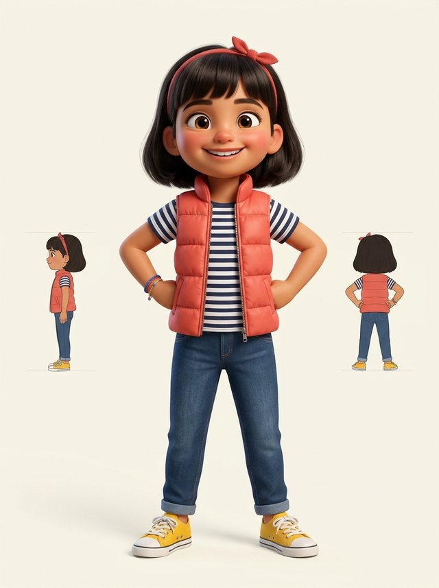
Kız B
Küt saç, kırmızı bant, mercan renkli şişme yelek (yan ve arka görünüş de var).
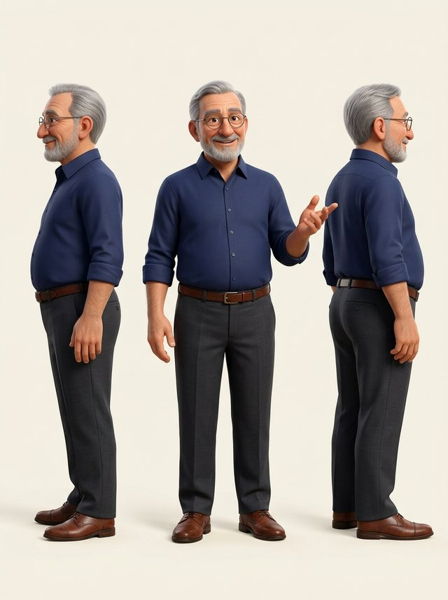
Antrenör A
Lacivert gömlek, kolları sıvalı (yan ve arka görünüş de var). Göğse gerçek SI amblemi eklenecek.
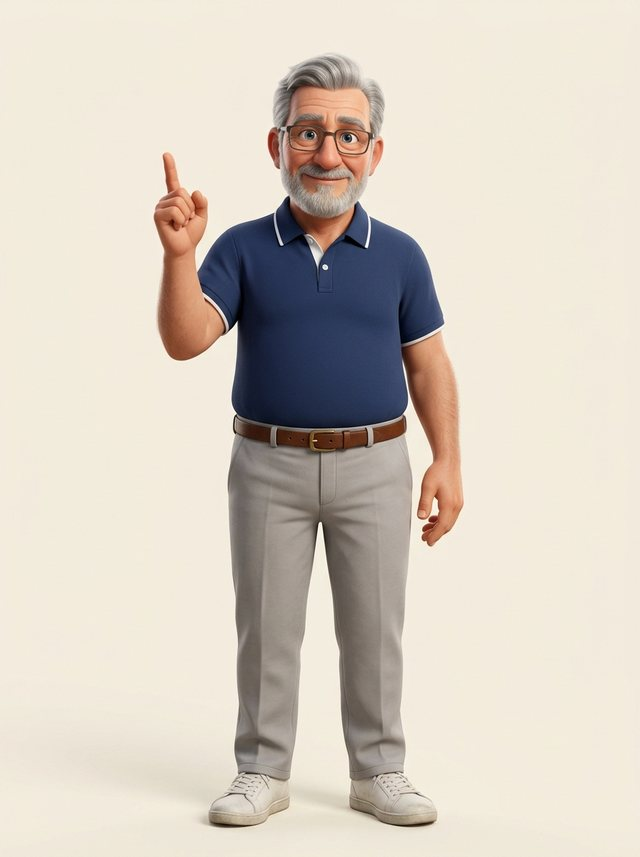
Antrenör B
Lacivert polo tişört, beyaz yaka; parmak kaldırmış anlatıyor. Göğse gerçek SI amblemi eklenecek.
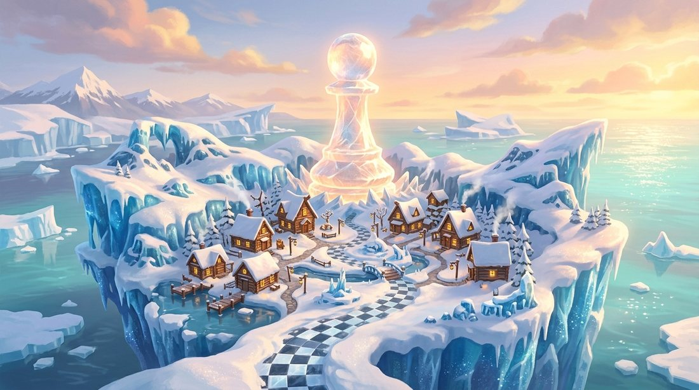
1. Ünite · Satrancı Tanıyalım
Buzullarla kaplı Piyon Adası: ortada dev buz piyon, damalı buz yol.
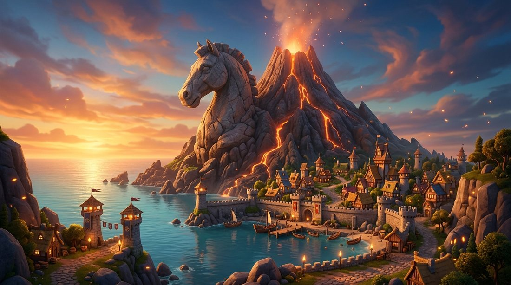
2. Ünite · Saldırı ve Savunma
At Adası: at başı şeklinde kaya, alev püsküren yanardağ, kıyıda savunma surları.
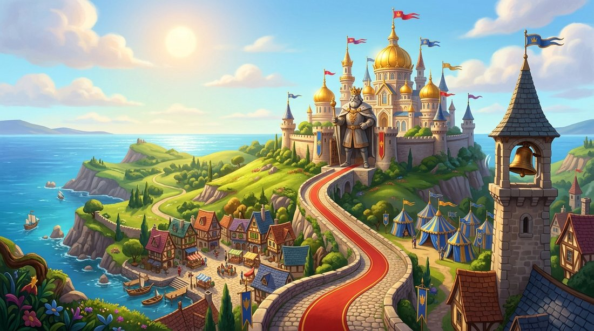
3. Ünite · Şah ve Şah Çekme
Şah Adası: altın kubbeli saray, şah heykeli, alarm çanı kulesi.
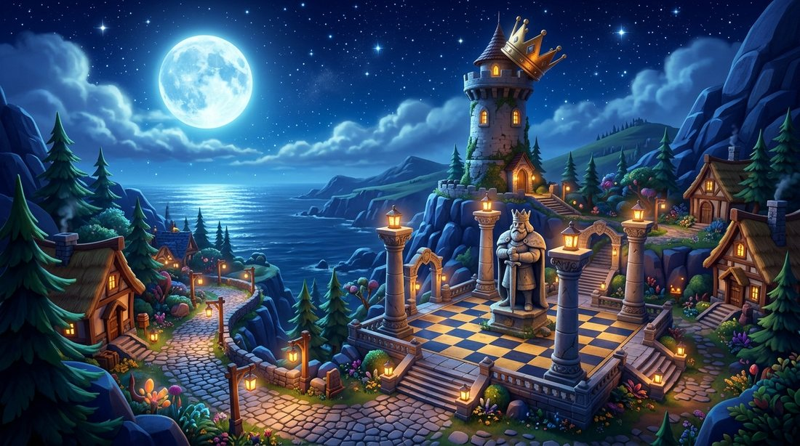
4. Ünite · Mat ve Pat
Mat Adası: gece, dolunay, iki sütun arasına sıkışmış şah heykeli, yere düşmüş taç.
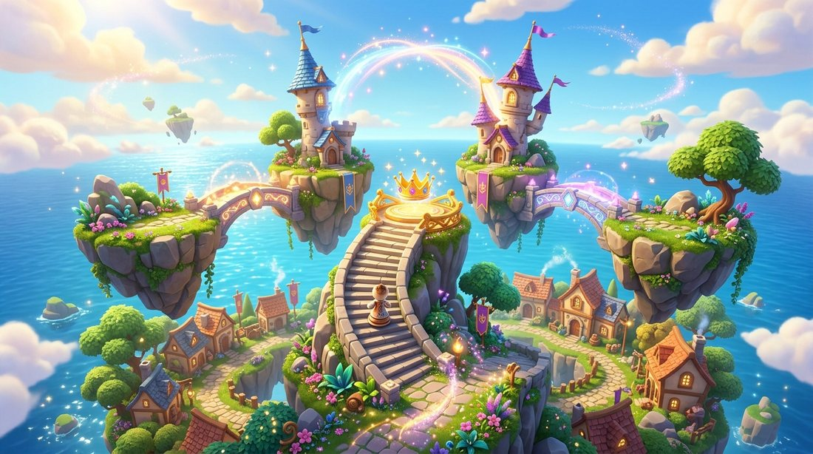
5. Ünite · Özel Hamleler
Uçan adalar: yer değiştiren kaleler (rok), taca çıkan merdiven (terfi).
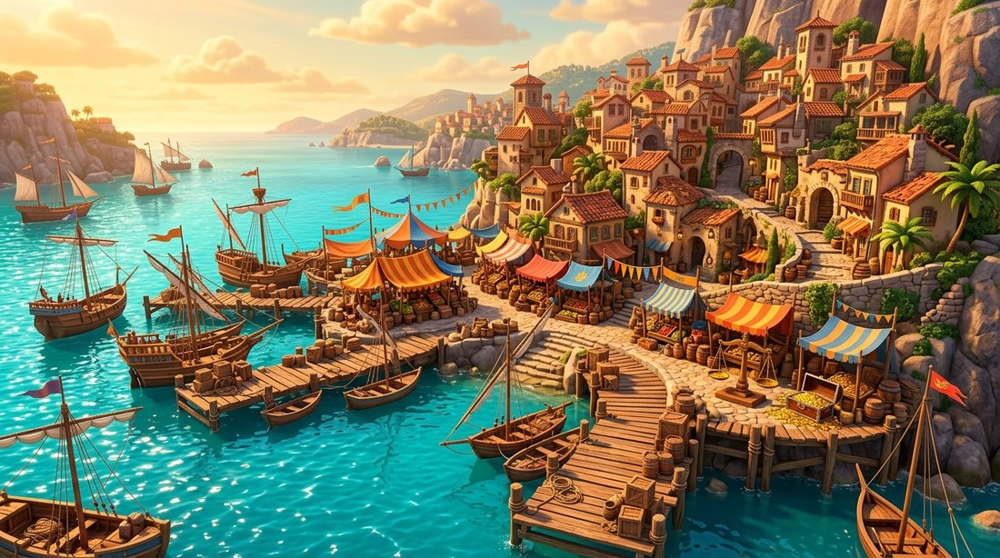
6. Ünite · Değiş-Tokuş Ustası
Takas Limanı: pazar tezgâhları, dev terazi, altın sandıkları.
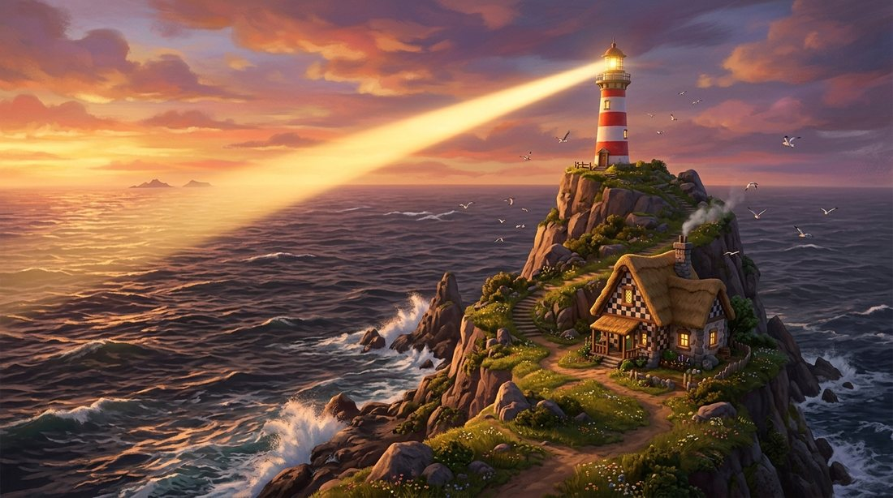
7. Ünite · 1 Hamlede Mat
Fener Adası: tek bir güçlü ışık huzmesi (tek hamle).
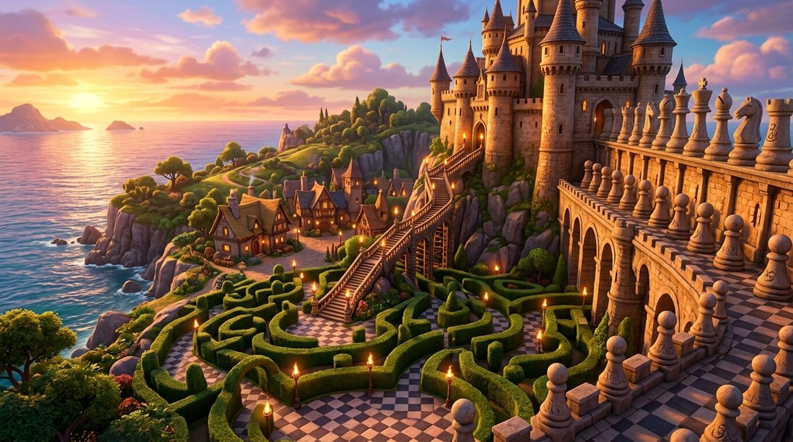
8. Ünite · İlk Mat Kalıpları
Kale ve Labirent Adası: taş kale, çalı labirenti, arka sıra surları.
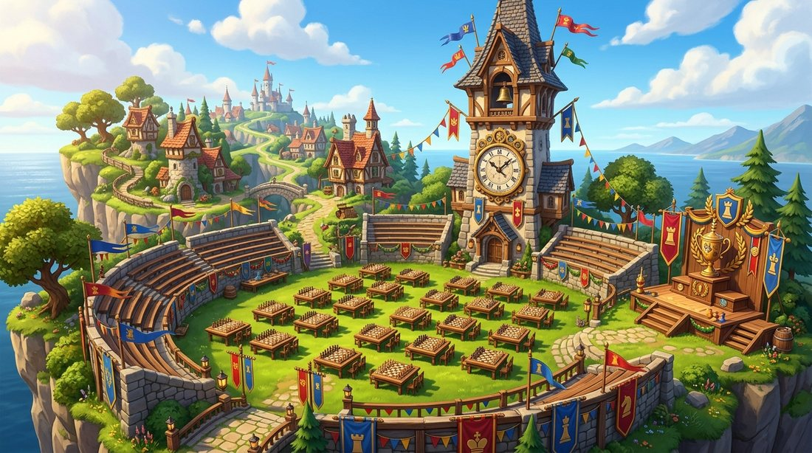
9. Ünite · Notasyon ve Turnuva Kuralları
Turnuva Adası: masalar, dev satranç saati kulesi, kupa podyumu.